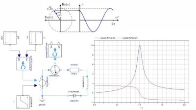
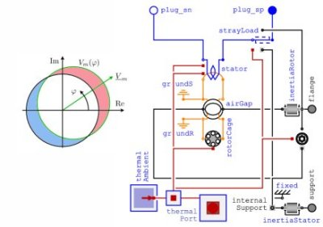
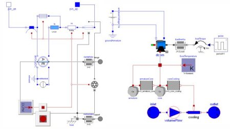
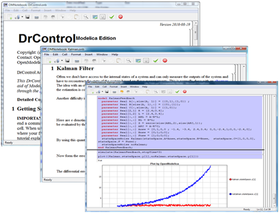
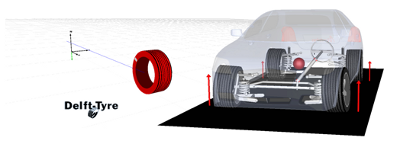
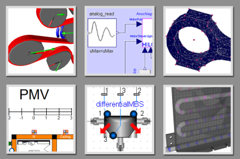
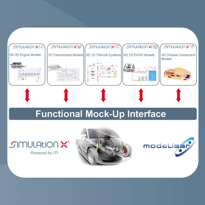
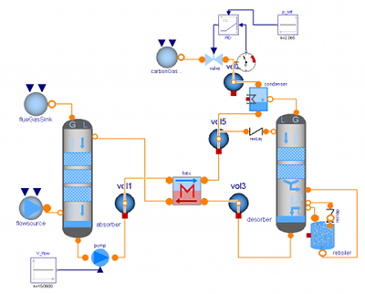
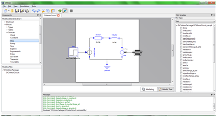

Modelica Newsletter 2010-2
Newsletter #2 of 2010 (News from Modelica Association, from Modelica related projects and from Modelica tool vendors)
Table of Contents
- Letter from the Board
- Modelica Association News
- 8th Modelica Conference
- OpenModelica/MODPROD Workshops
- Modelica Standard Library 3.2
- New QuasiStationary Library
- New FundamentalWave Library
- Improved Machines Library
- Modelica Users Groups
- Modelica Users Group in Japan
- Educational News
- DrControl based on OMNotebook
- New 5 day course for Dymola/Modelica
- Modelica and SimulationX - Tutorial
- Library News
- Tool News
Letter from the Board
Dear Modelica interested,
After intensive work by many people, a major new version of the Modelica Standard Library 3.2 was recently released with an increase of more than 30 % of the content. This is mainly due to incorporation of results from the ITEA2 project EUROSYSLIB.
The 8th Modelica Conference is approaching, taking place in March 21-22, 2011 in Dresden. The (hard) extended deadline for paper submission is Mo. Nov. 29., 2010. We hope to welcome a still growing number of Modelicans.
Due to requests from interested Modelicans in China, Japan, and Korea, the Modelica Assocation will actively help to build up Modelica Users Groups in this and other countries. As a first result to incorporate feedback, in the Modelica 3.2 Language Specification the usage of Unicode was introduced. Find more info below.
As you may have noticed, the Modelica web has slightly changed. The reason is a major upgrade of the Web site from Plone version 2.1.3 to 3.3.5. You may also notice that all Modelica related services will now redirect users to a secure SSL (https) connection. One benefit of these infrastructure improvements is that all the services (web, svn, trac, newsletter) are now managed together with one user identification mechanism. In case you find some errors or formatting problems due to this change, please inform the web master.
If you have interesting news for the Modelica community, please contact the newsletter editor (Michael Tiller) for information on how to submit newsletter articles for possible inclusion in the next newsletter. The deadline for articles for the next newsletter is Feb. 18, 2011.
Best wishes from the Board of the Modelica Association:
Martin Otter, Chairman (DLR Germany)
Peter Fritzson, Vice-Chairman (Linköping University, Sweden)
Michael Tiller, Secretary (Emmeskay, U.S.A.)
Hilding Elmqvist, Treasurer (Dassault Systèmes, Sweden)
Modelica Association News
8th Modelica Conference
The 8th Modelica Conference will take place in Dresden from March 20, 2011 to March 22, 2011. It will bring together people using Modelica for modeling, simulation, and control applications, Modelica language designers, Modelica tool vendors and modelica library developers. It provides Modelica users the opportunity to stay informed about the latest language and library developments and to get in touch with people working on similar modeling problems. Important dates for the Conference are:
- November 29, 2010: Submission of full papers, Submission of libraries, Exhibitors and Tutorial application
- December 20, 2010: Notification of acceptance papers and libraries, Exhibitors and Tutorial notification
- January 17, 2011: Upload of final versions of full papers and libraries, early registration
- March 20, 2011: Tutorials
- March 21 - March 22, 2011: Conference days
The system is already open for registration and submission of papers, please follow this link. We await many visitors and are looking forward to your registration.
This article is provided by Christoph Clauss (Fraunhofer)
OpenModelica/MODPROD Workshops
Location: Linköping University, Sweden
- 5th MODPROD Workshop on Model-Based Product Development, Feb 8-9, 2011
- 3rd OpenModelica Annual Workshop, Feb 7, 2011
Keynotes for MODPROD Workshop
- Bran Selic, President of Malina Software, previously at IBM and a main designer of UML, "Abstraction Patterns in Model-Based Engineering"
- Chris Paredis, Professor at Georgia Institute of Technology, Atlanta, USA, "The OMG SysML-Modelica Transformation Specification: Supporting Model-Based Systems Engineering with SysML and Modelica"
- Francesco Casella, Professor at Politecnico di Milano, Italy "Object-oriented modelling from a control engineer's perspective: past, present, and future"
The workshops are concerned with, but not limited to, the following themes:
MODPROD workshop
Integrated hardware-software modeling. Hardware modeling. Software modeling. Multi-body systems. Multi-domain/Multi-physics, e.g. electrical-hydraulic. Modelica-UML-SysML. Modeling and simulation tools. CAD modeling. Design optimization and analysis. Hardware in the loop simulation. Real-time and embedded system modeling. Electrical/hydraulics modeling.
OpenModelica Annual Workshop
Applications of OpenModelica. Modelica Libraries with OpenModelica. OpenModelica tool developments. Solver issues in OpenModelica. Meta modeling and hardware/software modeling. Code generation in Openmodelica. Parallel compilation and execution.
For more information, see www.openmodelica.org and www.modprod.liu.se .
This article is provided by Peter Fritzson (Linköping University)
Modelica Standard Library 3.2
The Modelica Standard Library 3.2 has been released on October 25, 2010 and can be downloaded together with the detailed release notes. Version 3.2 is backward compatible to version 3.1. This version is a major improvement:
- 357 models and blocks and 295 functions are newly included.
- 7 new libraries are included:
- Complex to provide complex numbers.
- ComplexMath to provide functions operating on complex numbers (like sin, cos).
- ComplexBlocks to model input/output blocks with complex signals.
- QuasiStationary to build up very fast simulations of electrical circuits with periodic currents and voltages.
- Spice3 to model detailled electrical circuits with Spice 3 models like MOSFET, Bipolar junction transistor, Diode, Semiconductor resistor.
- FundamentalWave to model 3-phase electrical machines in a strict component-oriented way which allows easier incorporation of more detailed physical effects.
- Fluid.Dissipation to compute convective heat transfer and pressure loss characteristics of a large set of fluid components (mainly based on Idelchik and VDI Wärmeatlas).
- About 70 tickets have been fixed reported via the Modelica issue tracker.
- Many existing libraries have been improved. Some highlights:
- All physical models that dissipate heat (such as electrical elements, electrical machines, bearings, dampers, etc.), have now an optional heat port to which the dissipated energy is flowing, if activated. This will significantly improve design studies about the thermal efficiency of technical systems.
- All electrical machines have now a "Losses" tab in the parameter menu to optionally model machines losses such as frictional losses, stator core losses or stray load losses, respectively.
- New Filter block to model continuous low pass, high pass, band pass and band stop IIR-filter of type CriticalDamping, Bessel, Butterworth and Chebyshev I.
- New functions to solve continuous-time and discrete-time algebraic Riccati, Sylvester, Lyapunov equations.
- New functions that take functions as input arguments to solve one nonlinear equation in one unknown and to compute the integral over a function using an adaptive Lobatto rule.
- New function and models to visualize a moveable parameterized surface.
- All valve components of the Fluid library have now an optional filtering of the opening signal and an optional leackage flow.
- All non-Modelica files, such as images, pdf-files, C-source files, scripts are moved to the new directory "Modelica\Resources" and are accessed by URIs (e.g., a file "D:\libs\Modelica\Resources\Images\xxx" is referenced as "modelica://Modelica/Resources/Images/xxx", so as path relative to the location of the library where it is stored).
A large part of the new classes have been developed with partial financial support by BMBF within the ITEA2 project EUROSYSLIB. We highly appreciate this funding.
This article is provided by Martin Otter (DLR-RM)
New QuasiStationary Library

The main intention of this sublibrary within the Modelica Standard Library 3.2 is the modelling of quasi stationary behaviour of single and multi phase AC circuits with fixed and variable frequency. It addresses the analysis of electrical circuits with purely sinusoidal voltages and currents. The main characteristics of the library are:
- Only pure sinusoidal voltages and currents are taken into account. Higher harmonic voltages and currents are not considered.
- Any electrical transient effects are neglected.
- The electrical components of this library are strictly linear.
- The phasors are represented by complex numbers. This library therefore utilizes the new package Complex which accompanies MSL 3.2.
- The angular frequency omega of the voltages and currents of a circuit are determined from a reference angle gamma by means of omega = der(gamma).
- The reference angle gamma is not a global quantity since it is propagated through the connector. Therefore, independent circuits of different frequencies can be modelled in one model.
- The connectors contain the real and the imaginary part of the voltage and the current RMS phasors.
- The reference angle gamma is present only once in a multiphase connector; a multiphase component has only one reference angle common to all phases.
In this release, single phase and multi phase components are included. Furthermore, three phase transformers in various connections are modelled. Quasi stationary models of electric induction machines (neglecting electrical transients, but taking mechanical dynamics into account) are currently under development and will be included in a future release.
This article is provided by Anton Haumer and Christian Kral (Austrian Institute of Technology)
New FundamentalWave Library

The exact magnetic field in the air gap of an electric induction machine is usually determined by an electro magnetic finite element analysis. The waveform of the magnetic field, e.g., the magnetic potential difference, consists of a spatial fundamental wave - with respect to one pole pair - and additional harmonic waves of different order. The fundamental wave is however dominant in the air gap of an electric machine.
This sublibrary of the Modelica Standard Library 3.2 models electric induction machines by coupling the electrical circuit with a magnetic fundamental wave circuit. Parameterization and behaviour of the machines is identical to the models of Modelica.Electrical.Machines:
- Asynchronous induction machine with squirrel cage
- Asynchronous induction machine with slipring rotor
- Synchronous machine with permanent magnet and optional damper cage
- Synchronous machine with electrical excitation and optional damper cage
- Synchronous machine with reluctance rotor and optional damper cage
The main advantage of this alternative formulation is that magnetic effects can be taken into account in a much more natural way. For instance, the characteristic of permanent magnets - including demagnetization effects - can be described with magnetic quantities.
This article is provided by Anton Haumer and Christian Kral (Austrian Institute of Technology)
Improved Machines Library

The electric machine models are based on the idea that each effect which can be separated from others is encapsulated in an object. Machine specific objects are winding resistances, winding stray inductances, cage models and air gap models, which takes the magnetic main field and the electro mechanical power conversion into account. In this release loss models related to mechanical friction, eddy currents in the core, stray load effects and brush contact are implemented additionally. Each loss model takes a consistent power balance into account, such that all dissipated losses are always considered in a respective thermal connector.
Each machine model has a conditional super heat port, which consists of single heat ports for all considered loss effects. If the super heat port of a machine is disabled, the loss components are thermally connected to internal temperature sources representing fixed operating temperatures. In this case, the losses are entirely dissipated in internal temperature sources. If the super heat port is enabled, the machine model can be coupled with an external thermal model.
Additionally, quasi stationary models of DC machines have been implemented. These models neglect electrical transients, but take mechanical dynamics into account. The connectors of those machine models are normal electric pins taken from Modelica.Electrical.Analog.Interfaces, since electric quantities are (time dependent) DC quantities in contrast to purely sinusoidal quantities as used for quasi stationary induction machines.
Furthermore, all components of the Modelica Standard Library taking losses into account have been equipped with an optional heat port. Thus all models of MSL 3.2 provide a proper power balance, except pure source models that are not modelled as power converters.
This article is provided by Anton Haumer and Christian Kral (Austrian Institute of Technology)
Modelica Users Groups
Due to several requests, the Modelica Association will start to support Modelica Users Groups. The goal is to help users in China, India, Japan, Korea and other countries to promote Modelica technology for local industry and Universities, and provide feedback to the Modelica Association in order to improve Modelica with respect to the local needs. Also, Modelica related information shall be disseminated in the local languages, such as Modelica news on the Modelica web, the Modelica Language Specification, or educational material. Also workshops might be organized together (e.g. 3-6 months after the Modelica Conference to inform about the most important news).
From an organizational point of view, the Modelica Users Groups are independent entities in the respective country. In order to be accepted, the Modelica Association will soon setup a set of minimal rules (such as non-profit organization, democratic election of the board, vendor-independence), will provide services for these groups (e.g., the board of the respective Modelica Users Groups will have access to the internal Modelica Web and will be on the Modelica-Design email list), and will provide entry points on the Modelica web site for these groups.
Please, contact the following persons, if you are interested to help building-up a Modelica Users Group in China, Japan, Korea or other countries:
| Japan | Rui Gao (email: Rui.GAO at 3ds.com). He has already started a Modelica Users Group in Japan, see below. |
| China | Wenyong Li (email: Li at itisim.com) . |
| Korea | Hoyoun Kim (email: hykim at kimhua.co.kr) . |
| Other countries | Contact the Modelica board (board at Modelica.org) |
This article is provided by Martin Otter (DLR-RM) and Michael Tiller (LMS International) and Peter Fritzson (Linköping University) and Hilding Elmqvist
Modelica Users Group in Japan
After several months of preparation, the Modelica Users Group, Japan (MUJ) started activity from March, 2010. The purpose of MUJ is to focus more on the Modelica market aspect, i.e. to promote Modelica technology to Japanese industry and education, and at the same time feedback to MA enhancement proposals based on local practices. MUJ now has registered 15 Modelica users from tool venders, consulting companies, industries and universities. Three MUJ meetings had been held at Nagoya, Tokyo and Toyota city sponsored by Dassault Systemes K.K. and Toyotsu Syscom Corp.
Amoung many topics of MUJ meetings, following three are now under discussion and development.
- Modelica tutorial.
- Proposal for Modelica Demonstration Package.
- Proposal for Modelica Performance Test Package.
The next MUJ meeting is organized by Neorium Technology, and will be held on Nov., 25, 2010 at Dassault Systemes K.K. Tokyo with the following presentations and free technical discussions (if you are interested to attend this meeting, please contact Rui Gao):
- Modelica Modeling and Its Application in Fault Diagnosis, Tadao Kawai, Osaka City Uni.
- Modelica with Added Value in Product Lifecycle Management, Hideyuki Okabe, Dassault Systemes K.K.
- Modelica Approach for Engineering Education: User Cases Study, Rui Gao, Dassault Systemes K.K.
We are looking forward to exchanging information with Modelicans world wide, and getting support from MA.
This article is provided by Rui Gao (Dassault Systemes K.K.)
Educational News
DrControl based on OMNotebook

DrControl is an active electronic book which is part of the open source platform OpenModelica . It contains the background control theory material as well as Modelica models which can be re-simulated within the same document.
Main features are:
- The concept of basic control theory is explained along with exercises
- Transformation from state space models to transfer function representation and vs.
- Observer models and Kalman filters
- Introducing noise in the models
- Linear quadratic energy formulation
- Examples like controling a pendelum, DC-motor or tank system
This article is provided by Peter Fritzson (Linköping University)
New 5 day course for Dymola/Modelica
Modelon would like to highlight our reworked Dymola Introduction course. This course is the perfect introduction for engineers that quickly need to obtain a production level skill set in working with Dymola/Modelica. It has also shown to be highly appreciated by experienced users that want to deepen their skills.
This course is a comprehensive and unified introduction to the modeling and simulation capabilities of Dymola and Modelica. It teaches you, among other things, how to create models using components from available model libraries, how to create custom components and organize them into a library, to setup and solve simulation problems, to analyze models, to post-process, to work interactively and to automate work flow, and to interface with other software environments.
After this course you should be fluent in using Dymola and be confident in navigating all parts of its GUI. You should also have a solid understanding of the capabilities and the scope of Dymola and know how to use the Modelica Standard Library and the Dymola features. You will also know where to find more detailed information whenever needed. The next scheduled course dates are November 22 - 26 2010 in Lund, January 31 - February 4 2011 in Gothenburg, and May 2-6 2011 in Lund. The detailed course contents are available for download. More info is available from the training section of our website.
This article is provided by Hubertus Tummescheit (Modelon AB)
Modelica and SimulationX - Tutorial
An introduction into the modeling language Modelica and its use in SimulationX will be presented at the iti Symposium on 23rd November 2010 by Ingrid Bausch-Gall, see:
http://www.iti.de/en/company/iti-symposium-2010/tutorial-day.html
This article is provided by Ingrid Bausch-Gall (BAUSCH-GALL GmbH)
Library News
New Modelica Libraries by Modelon

Modelica Interface to TNO Delft Tyre
Modelon has developed a Modelica interface to the TNO Delft-Tyre models library. The Modelon Delft-Tyre Interface gives access to the TNO standard implementations of the widely recognized and extensively validated MF-Tyre and MF-Swift tyre models in Modelica environments. MF-Tyre and MF-Swift are industry standard tire models for vehicle dynamics handling and ride analysis. Support for the OpenCRG road description standard is included. The Delft-Tyre Interface supports the Modelica.MultiBody package as well as the Modelon Vehicle Dynamics Library. The Delft-Tyre Interface is currently available for Dymola. Contact sales@modelon.se for more information. Delft-Tyre, MF-Tyre, and MF-Swift are registered trademarks of TNO Automotive, Netherlands.
Modelica-Interface to the MultiFlash physical properties Library
Modelon has developed an interface to the MultiFlash(TM) fluid property package by Infochem UK Ltd. This opens the opportunity to develop high-accuracy process models, in particular for phase separation and applications in energy and the oil-and gas industry. Multiflash can perform multiphase equilibrium calculations between any number of phases of different types. Each property of each phase may be described by a different thermodynamic model, if required. The Modelica interface contains both a low-level interface that exposes the arguments to the FORTRAN routines directly, and a high-level interface that makes typical cases (transient models of multi-component 2-phase equilibria) very easy to use. An advanced caching mechanism ensures that the performance is very good, much faster than e.g. a coupling through the Cape-Open interface of MultiFlash can offer. The MultiFlash interface is currently available for Dymola. Contact sales@modelon.se for more information.
This article is provided by Hubertus Tummescheit (Modelon AB)
Modelica Libraries by Bausch-Gall

We will present an overview about Modelica Libraries at the ITI Symposium in November 2010. Frank Rettig, the developer of the Belts Library will be at the Symposium and will present his new Modelica Tools Library.
Current available libraries are: Belts, Flexible Bodies, PowerTrain, HumanComfort, Visualization and BG_RT. We plan to offer two more libraries in spring 2011. Please contact us, if you are interested to purchase a library or to market your library.
This article is provided by Ingrid Bausch-Gall (BAUSCH-GALL GmbH)
Tool News
Functional Mockup Interface (FMI)

After releasing the "FMI for Model Exchange" standard in January 2010 (see last newsletter) as result of the ITEA2 MODELISAR project, the second part of this interface was released in October 2010: FMI for Co-Simulation.
Co-simulation is a simulation technique for coupled time-continuous and time-discrete systems that exploits the modular structure of coupled problems in all stages of the simulation process (pre-processing, time integration, post-processing). The data exchange between subsystems is restricted to discrete communication points. In the time between two communication points, the subsystems are solved independently from each other by their individual solver. Master algorithms control the data exchange between subsystems and the synchronization of all slave simulation solvers (slaves).
Co-Simulation techniques are e.g. used for the distributed simulation of heterogeneous systems, for partitioning and parallelization of large systems, multi rate integration, and hardware-in-the-loop simulations.
The "FMI for Co-Simulation" uses the same file structure and data exchange techniques as "FMI for Model Exchange" does. All information about the slaves that is relevant for the communication in the co-simulation environment is provided in a slave specific XML-file that contains as well a set of capability flags to characterize the ability of the slave to support advanced master algorithms which use variable communication step sizes, higher order signal extrapolation etc. Beside of stand alone solutions (the FMU contains model and solver), tool based computation is supported too. Local and distributed co-simulation scenarios are possible.
The FMI specification can be downloaded from the FMI web site. There is also an overview about the tools which support the different FMI standards.
For the next year the MODELISAR consortium plans the further development of the FMI standards motivated by the feedback returned from first applications. In particular, "FMI for Modelica Exchange" and "FMI for Co-Simulation" will be merged in the next version.
This article is provided by Torsten Blochwitz (ITI GmbH) and Martin Otter (DLR-RM)
SimulationX 3.4 with FMI

CAE specialist ITI GmbH announces the new major release 3.4 of its multi-domain software platform SimulationX to be launched in autumn 2010. After having established its dedicated Modelica Edition of SimulationX in the Modelica market ITI takes the next steps with its upcoming release. Supporting Modelica Standard 3.1 on the one hand and implementing the Functional Mock-Up Interface on the other hand SimulationX is ready for integration into various design chains. Even more enhanced handling features simplify the work with Modelica files and the change-over from other tools. Amongst others SimulationX 3.4 offers the following enhancements:
- The support for Modelisar FMI enables tool independent model exchange. Besides the export of Functional Mock-up Units (FMUs) providing Functional Mock-up Interfaces for Model Exchange or Co-Simulation SimulationX 3.4 supports the import of FMUs providing FMI for Model Exchange.
- The necessary Modelica code for integration of imported FMUs is generated automatically.
- As an enhancement of the existing Code-Export wizard with all comforts the generation of Modelisar FMUs is already integrated in SimulationX.
- SimulationX 3.4 supports the generation of binaries for x86 as well as x64 targets and therewith is the optimal tool for upcoming demands.
- The support of the Modelica Standard Library 3.1 including Modelica Media and Multibody enables the integration of third-party and customer specific libraries.
ITI continues its strong activities within the Modelica community. For further information, please contact sales@simulationx.com or visit www.simulationx.com.
This article is provided by Manuela Joseph (ITI GmbH)
JModelica.org 1.4.0

JModelica.org is an extensible Modelica-based open source platform for optimization, simulation and analysis of complex dynamic systems. The main objective of the project is to create an industrially viable open source platform for optimization of Modelica models, while offering a flexible platform serving as a virtual lab for algorithm development and research. JModelica.org is also intended to provide a platform for technology transfer where industrially relevant problems can inspire new research and where state of the art algorithms can be propagated from academia into industrial use.
JModelica.org 1.4.0 at a glance:
- Functional Mockup Units (FMUs) exported from e.g., Dymola can now be imported into Python and simulated using the Assimulo package, which is part of the JModelica.org platform. This feature enables users to use high-end modeling tools in combination with the powerful scripting capabilities offered by Python.
- Improvements of the dynamic optimization algorithm, including minimum time problem support, automatic scaling based on nominal attributes and piecewise constant control profiles.
- Parametric sensitivity computation for Modelica models using the Sundials integrator suite.
- Many improvements of the JModelica.org compiler, including support for replaceable/redeclare constructs, stream connectors and record constructors.
- A set of new, intuitive and well documented Python user interaction functions for easy access to simulation and optimization algorithms.
The figure shows a model of an amine-based post-combustion carbon capture plant for optimization in JModelica.org. (Figure generated by Dymola.)
This article is provided by Johan Åkesson (Lund University)
OpenModelica 1.6

The OpenModelica 1.6 release primarily contains flattening, simulation, and performance improvements regarding Modelica Standard Library 3.1 support, but also has an interesting new tool – the OMEdit graphic connection editor, a new educational material called DrControl, and an improved ModelicaML UML/Modelica profile with better support for modeling and requirement handling (see also www.openmodelica.org)
Main features:
- A new improved open source graphic model connection editor called OMEdit, supporting 3.1 graphical annotations, which makes it possible to move models back and forth to other Modelica tools without problems. The editor has been implemented by students at Linköping University and is based on the C++ Qt library.
- A new DrControl electronic notebook for teaching control theory and modeling with Modelica. An improved ModelicaML UML/Modelica profile with better support for cyber-physical modeling and requirement handling.
- Flattening of the whole Modelica Standard Library 3.1 (MSL 3.1), except Media and Fluid. Improved simulation coverage of MSL 3.1. Many models that did not simulate before are now simulating. However, there are still many models in certain sublibraries that do not simulate.
- Performance improvements such as increased flattening speed of a factor of 5-20 compared to OpenModelica 1.5 for a number of models, especially in the MultiBody library. Reduced memory consumption by the OpenModelica compiler frontend, for certain large models a reduction of a factor 50. Reorganized, more modular OpenModelica compiler backend, can now handle approximately 30 000 equations, compared to previously max 10 000 equations.
- Implementation of stream connectors. Support for linearization through symbolic Jacobians.
This article is provided by Peter Fritzson (Linköping University)